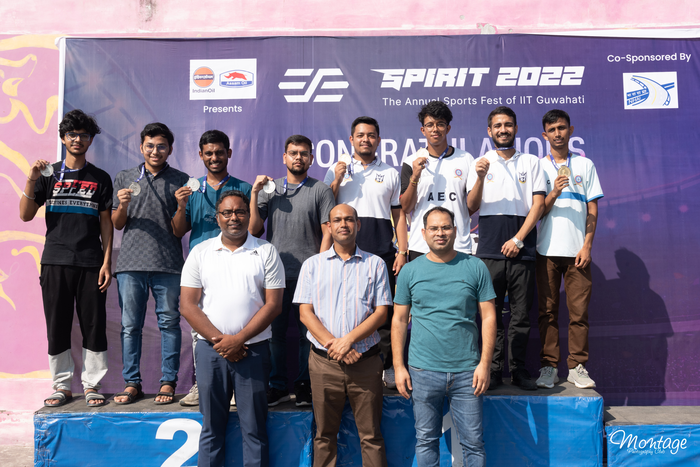
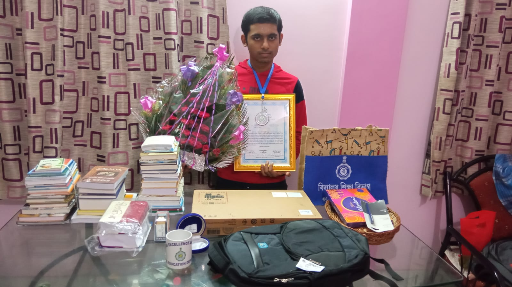

Achievements
Spirit 2022 Silver Medal
Spirit, The annual Sports Festival of IIT Guwahati. Spirit is the biggest Sports festival of North East India. Nevertheless, it is a great platform for college teams to exhibit their exceptional sporting spirit, and compete for glory!.
Almost 50+ colleges participate every year in this Fest in more than 20+ sports events. And I got the rare chance to represent my college in Table Tennis in this big event and we ended up as Runners-up.
We tried giving our best in the final, but alas! there are times in life where you don't always get what you expect. Quite heartbroken due to the loss, I am fortunate enough to
represent my college in this big occasion made many great memories with my teammates and instructor :)
WBJEE 2021
WBJEE is a state-government controlled centralised test, conducted by the West Bengal Joint Entrance Examinations Board for admission to many private and governmental engineering institutions in West Bengal.
After 2 years of constant hardwork, I cleared WBJEE 2021, in my first attempt. Nay, not only cleared, but secured
a state rank of 113, among the 0.92 lakh+ candidates who appreared for the test, that is to say,
I was among the top 0.2% of all the examinees in the state.